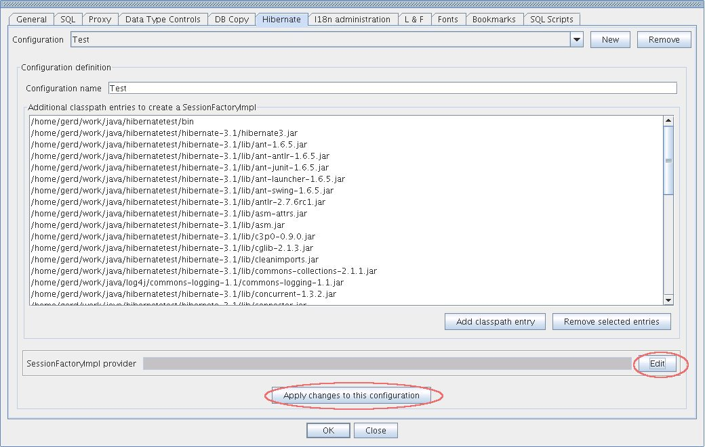

Hibernate Plugin
Before using the Hibernate Plugin you must create at least one Hibernate configuration in SQuirreL's Global Preferences.

First, you must provide a name for the configuration. Next, you need to add all of the Hibernate library jars as well as all of the jars that are needed by your mapped classes and the mapped classes themselves to the additional Classpath. Normally this is simply the same Classpath that you use in your project (Ant, Eclispe, NetBeans, IntelliJIDEA, etc.) for the Java compiler.
Since there are
multiple ways to obtain a Hibernate connection (SessionFactory), the
Hibernate Plugin offers the most standard way to provide this connection by calling
new org.hibernate.cfg.Configuration().configure().buildSessionFactory();
and offers the user to provide this connection by himself.
This means that the user has to give the Plugin a class that has a
method with the following signature:
public org.hibernate.impl.SessionFactoryImpl getSessionFactoryImpl()
When this configuration part is done you may connect to this Hibernate Plugin configuration from inside a Session window.